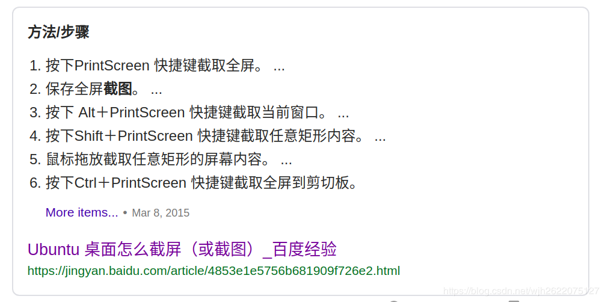
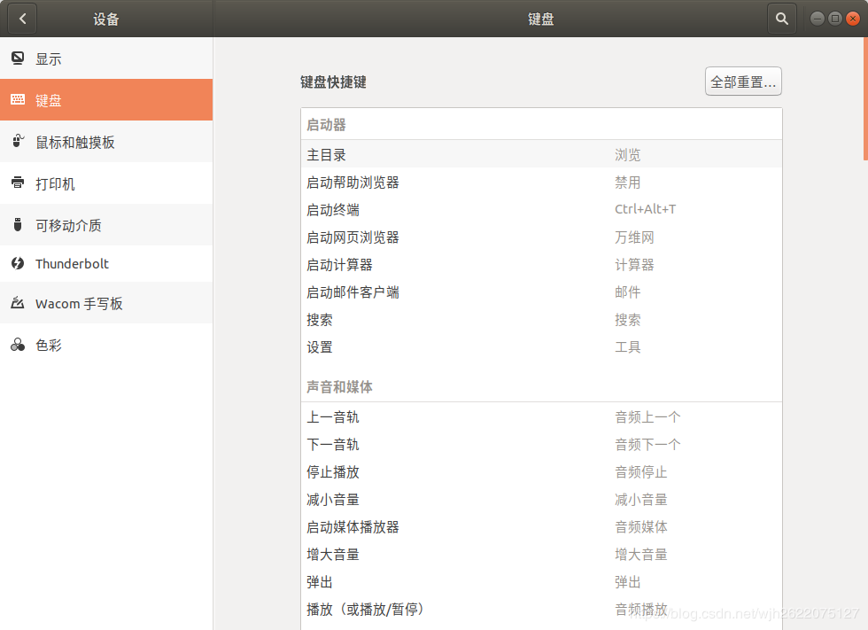
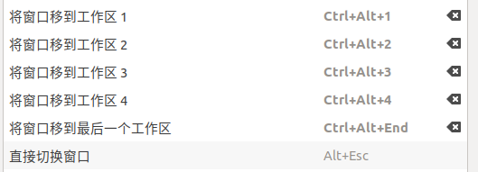
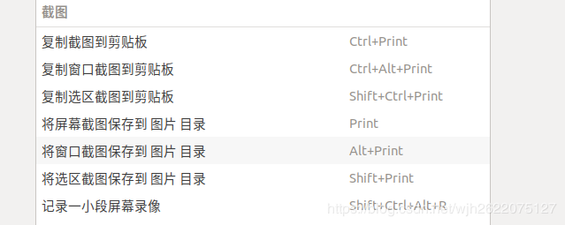
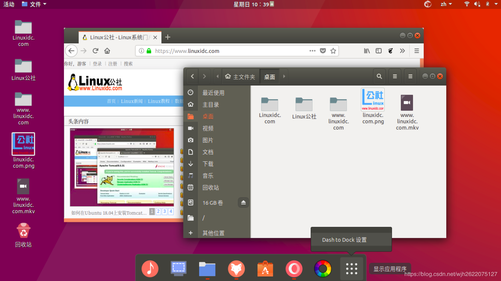
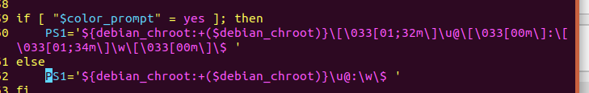
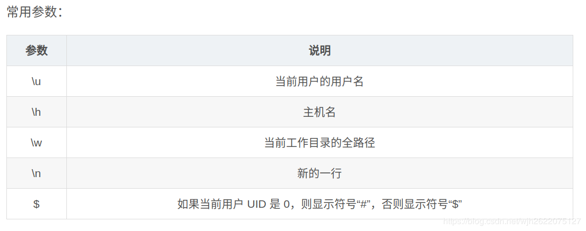
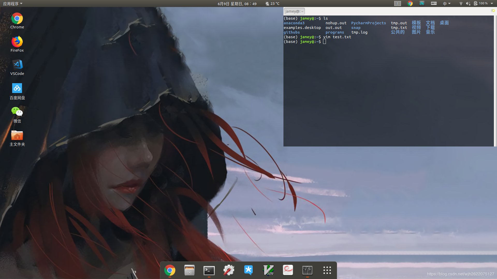
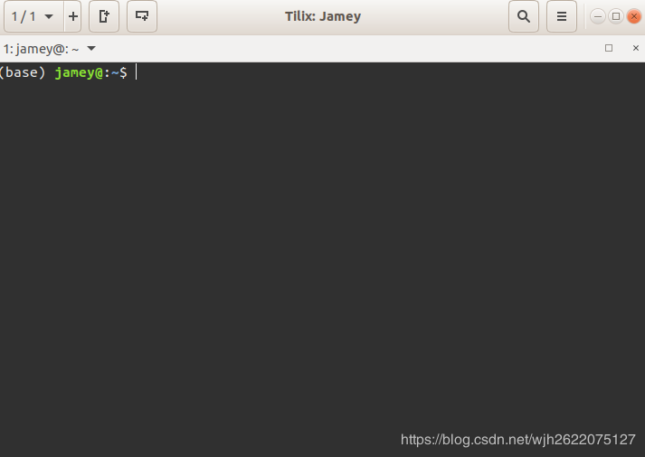
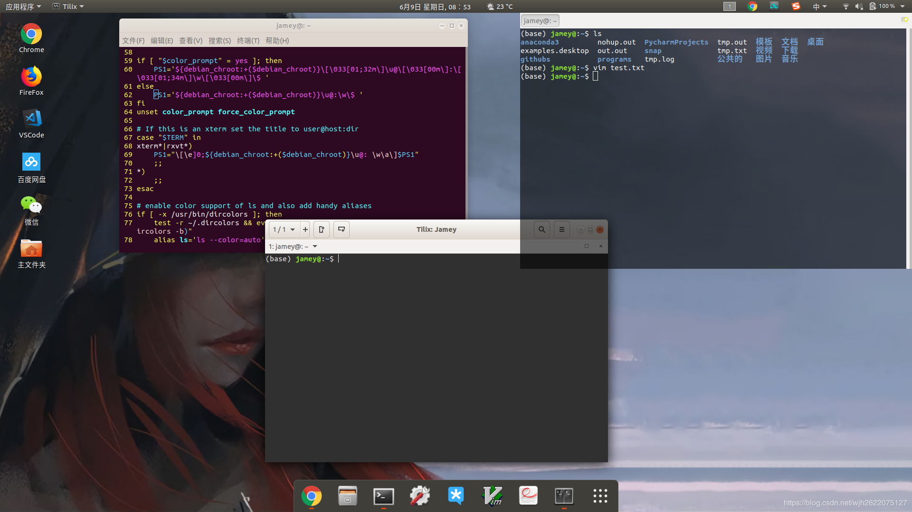

优雅地使用ubuntu18之一
Contents
文章链接
优雅地使用ubuntu18.04（一） 优雅地使用ubuntu18.04（二）
1、ubuntu 截图
理论上来说应该是可以直接下面这样，但是我的截图出来不会弹出窗口，所以直接搜索截图程序进行截图。  shift+ctrl+prtSc 能够选中区域截图，并复制到剪切板
2、终端快捷方式
ctrl+alt+t
3、ubuntu自定义程序快捷方式
首先查看设置-键盘；发现有很多快捷键的记录  比如我们可以设置移动工作区的快捷方式  关于截图的快捷键 
4、ubuntu快速回到桌面
win + D
点击ubuntu的小图标不会自动消失真是难受。
5、安装tim、微信等应用
使用deepin-wine安装 别看别人写的博客安装了，看官方github说明吧https://github.com/wszqkzqk/deepin-wine-ubuntu
6、rtl8821CE系列 安装ubuntu 找不到wifi适配器
参考下面这个博客，thinkpad e系列还真是坑 https://blog.csdn.net/fljhm/article/details/79281655
7、ubuntu 手势操作
找了网上很多的手势操作的程序，很多都没弄成功，最后弄好了这个comfortable swipe
这是它的github，里面如何安装讲的非常清楚
可以实现多指滑动自定义，虽然没有win 10 那么舒服，但好歹更方便了。
8、二次点击dock图标隐藏窗口
初始的程序窗口点击不会消失，设置二次点击dock能够让程序消失
先输入
export GIO_EXTRA_MODULES=/usr/lib/x86_64-linux-gnu/gio/modules/
再输入
gsettings set org.gnome.shell.extensions.dash-to-dock click-action 'minimize'
即可设置dock最小化
9、设置dock为mac风格
看这篇文章 但我用这总有bug 预期图 
10、设定制终端的提示符
原先终端提示符有冗长的主机名，然而这东西没一点用处，拜拜占了那么多位置。
查看~/.bashrc文件中的PS1参数，这个参数就是提示符的格式。主机名代表\h，那么我们找到\h删除掉。
其他很多还可以自定义


如图，变得简洁了不少

参考https://blog.csdn.net/sunbocong/article/details/82971477
11、下载多种终端
我下载了两个终端，一个是下拉式终端guake 可设置透明、在顶栏还是下面、失去焦点隐藏、F12开关  第二个是tilix，功能比原生的多，特别是这窗口，比较丰富  如图为三种终端的比较 
Author 姬小野
LastMod 2019-06-09